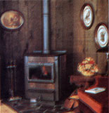
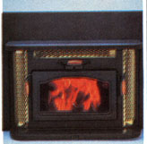
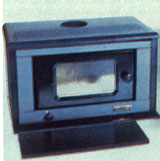
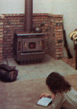
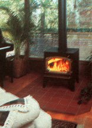
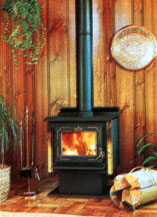
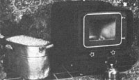

Oregon's emissions standards for woodstoves go into effect next year, and at this point...
Five years ago, MOTHER was one of the first publications to warn of the problem of pollution from wood-burning heaters. And, in the interim, we've reported regularly on both continuing research into woodstove pollution and the search for solutions.
Keeping an eye on our collective chimneys has proven to be a far more pleasant job than we first imagined . . . simply because real progress has been made, progress that will, in the long run, prove to be a boon to all wood burners. Catalytic combustors-some of which can be retrofitted on existing woodstoves (see MOTHER NO. 90)-and improved stove designs have definitely increased woodburning efficiency.
Now there's a new generation of woodstoves that fully incorporate these advances. The awesome improvement in performance they provide-from around 50% efficiency in the laboratory five years ago to better than 75% today-may well be as revolutionary as was Ben Franklin's invention of the cast-iron wood burner 200 years ago. In fact, because draft problems and condensation in flue gases limit maximum practical efficiency to the low-to mid-80s, a few stoves are actually approaching the theoretical limits of efficiency! Pollution has been reduced to an even greater degree. The Pellefier, for example, emits less than one-twentieth the particulate matter of a conventional stove. And this fall the first tested models-products that represent nothing less than a technological breakthrough-are available for you to buy.
The insistence of regulators that woodstove pollution be controlled has played no small role in the development of these new technologies, and the ball may only have begun to roll. Today, Oregon has a regulation that will, after July 1, 1986, prohibit the sale of stoves that fail to meet its emissions requirements. Colorado, too, has passed a law that will begin to take effect in 1987. Both of these states have concluded from scientific and visual evidence that wood burning contributes significantly to their region's particulate-emissions problem.
But the biggest player on the horizon is none other than the United States Environmental Protection Agency. The EPA is aiming to reduce three kinds of pollution from wood burners: total suspended particulates, carbon monoxide, and polycyclic organic matter (commonly called POMs, many of which are cancer-causing). The EPA believes that woodstoves contribute almost as much particulate matter to our atmosphere as do all U.S. coal-fired power plants combined. They've also concluded that about 40% of all POMs come from wood-burning space heaters. In an uncharacteristic show of expeditiousness-brought on at least in part by legal pressure from New York State and the Environmental Resources Defense Council under the Clean Air Act-the EPA now plans to begin regulating the manufacture of woodstoves by as early as January 1987.
What this means is that in a very big hurry (perhaps less than two years from now) the conventional airtight woodstove could be on its way to extinction. Today, there are ten woodstoves that have successfully completed the tests for Oregon's 1986 standard. (Only five of those can currently stand up to Oregon's 1988 regulation.) However, with the EPA threatening to halt the sale of dirty stoves on a national basis, you can expect to see the number of clean burners increase rapidly. As it's said, "Necessity is the mother of invention."
Figures from Oregon's Department of Environmental Quality (DEQ) make up the largest body of data available. However, though numbers may not lie, they can certainly be misinterpreted. Consequently, it's important that you know what the various statistics in our listing mean.
External dimensions, used in conjunction with the listed minimum clearances to combustibles, will help you decide whether a particular heater will fit comfortably into your house. Since the majority of these heaters have either fan-forced or natural-convection heat-exchange areas surrounding their fireboxes, they require less clearance than do typical radiant stoves. So the chances are that if you're burning wood now, any of these stoves will fit where your old heater is located.
Firebox capacity, door opening, and log length are all dimensions that will help you determine how much wood the stove will hold. Because many of the new high-technology heaters use very small fireboxes to maintain high temperatures, their burn times and heat outputs may be seriously limited by capacity. These figures should be used in conjunction with the burn times listed under "Performance in Oregon DEQ Testing" to get a clear idea of what performance you should actually expect: Also, because many of the heaters use complicated combustion-air and heat-exchange passages, their doors may be relatively small. This can be a real nuisance when loading, so check the numbers carefully. The last "dimension" item, weight, will simply give you an idea of how many friends you may need to install the heater or how expensive it might be to ship.
Several factors limit the usefulness of the Oregon performance data to consumers. For one thing, according to Paul Tiegs, the owner and senior principal scientist of Omni Environmental Services-the laboratory that did all of the testing on the ten stoves-the listed efciency figures are accurate only to within plus or minus 5%.
The average weighted efficiency/emissions categories present another complication. To develop their standard, Oregon DEQ researchers studied the habits of Oregon wood burners and determined that they tend to fire their heaters at medium-to-low burn rates (a heat output of about 13,000 Btu/hour, or about three pounds per hour at 50% efficiency) and in about six-hour cycles. Consequently, the "weighted" average is an efficiency figure that's statistically biased toward 13,000 Btu/hour. If you live in a colder climate than that of Oregon, you may require a higher average heat output . . . and as you can see from the efciency curves on the graphs, none of the stoves operates at exactly the same efficiency across its heat output range. In fact, some of them are drastically less efficient as output increases. So judge carefully what your own heat needs are in comparison to a particular stove's performance curve.
Perhaps most significant, for the sake of experimental consistency the stoves were all tested with air-dried, dimensional Douglas fir lumber loaded at a density of about seven pounds per cubic foot of firebox. All of the stoves would have much longer burn times if they were loaded with densely packed hardwood. To use Woodcutter's huge Blaze King King as an example, if the firebox were only halfway filled with air-dried red oak firewood, the fuel load would weigh over 80 pounds, not the 29.2 pounds used in the tests. (Paul Tiegs hopes to offer more useful information to consumers by adding an optional third phase of testing for manufacturers-one that would examine heat outputs and burn times using loads of cordwood instead of lumber.)
For the moment, then, use the burn times and heat outputs that are listed only to make comparisons between stoves. If you're burning wood now, examine your present needs. Keep in mind that in some cases, designers have limited the minimum firing rate by putting a stop on the draft control to prevent the very dirty low burns . . . or limited air intake to avoid running into safety problems associated with overheating.
The final figures we've provided are Omni Environmental's figures for maximum and minimum draft one foot up the pipe from the stove. If you have problems with low chimney draft-back puffing and hard starting, for example-you're very likely to have more trouble with a high-efficiency stove. Because chimney draft is strongly influenced by flue-gas temperature, and because high heattransfer efficiency demands low flue-gas temperature, high-tech wood burners are inherently more troublesome when it comes to draft. There's no way to say what's enough draft without knowing the particular situation, but you can see that there are significant differences between the heaters. With the lower-draft models, you may find that you'll have to extend your chimney to provide adequate draw.
Woodstove efciency figures are inevitably likened to EPA fuel mileage ratings for cars. The lessons are much the same: Though these numbers are for comparison purposes only-your actual efficiency and emissions "may vary," as they say-we can just about guarantee that the performance of any of these stoves will be significantly better than that of the one you have now.
If you're burning four cords of $100-per-cord wood each year (and be realistic about what it costs-in time as well as expenses-even if you cut it yourself), stepping up from a 50% efcient black box to a 75% high-tech stove will save you 1-3/10 cords-or $130-in firewood alone in the first year. Add to that the cost (or aggravation) of chimney cleaning that you can save, and you've got a pretty convincing economic argument for buying a new stove. The health argument is even stronger: Using one of these stoves can be a "Clean Air Act" of your own.
There are manufacturers other than the ten listed with this article that have made considerable efforts to develop and test efficient, clean-burning woodstoves. Some of these are no doubt waiting for the controversy over testing methods to clear before they invest in the very expensive process of Oregon testing. We believe that two of these stoves currently have credible testing figures. We won't quote the test data these companies have achieved, simply because their results aren't comparable to Oregon's testing methods.
American Eagle Stoves (Lancaster Fabricating Co., 100 W. Drullard Ave., Lancaster, NY 14086, 716/684-8256) participated in testing conducted by Shelton Energy Research for the New York State Energy Research and Development Authority in 1984, and their product proved to be the most efficient and cleanest-burning of the lot.
Lakewood Stove Company (P.O. Box 489, Bobcaygeon, Ont., Canada KOM 1A0, 705/738-2349) has also had extensive testing done by a variety of labs in Canada. In its December 1983 issue, Canadian Consumer magazine picked the Lakewood Special II($795) over five other catalytic stoves after extensive testing.
|
 Martenson Industries, Rawhide I RH 861; |
 CESCO Industries, Fisher Tech IV; |
 Brugger Industries, BOSCA FS 500; |
|
 Woodcutter's Manufacturing, Blaze King |
 Lopi Int., Answer A1; |
 Osburn Industries, Regent 1000. |
|
 |
|
|